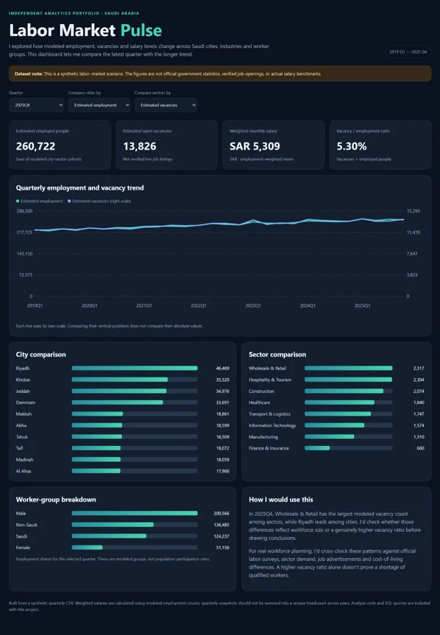

The question
What was I exploring?
Where does the modeled labor market indicate changes in workforce demand?
Approach
How I approached it
Prepare labor-market measures and visualize employment, vacancy and demographic trends.

Interpretation
What the evidence suggests
Useful for demonstrating workforce analytics, not for estimating actual Saudi vacancies.
Data integrity
This project uses synthetic data. Figures are simulated and do not describe actual Saudi market outcomes.